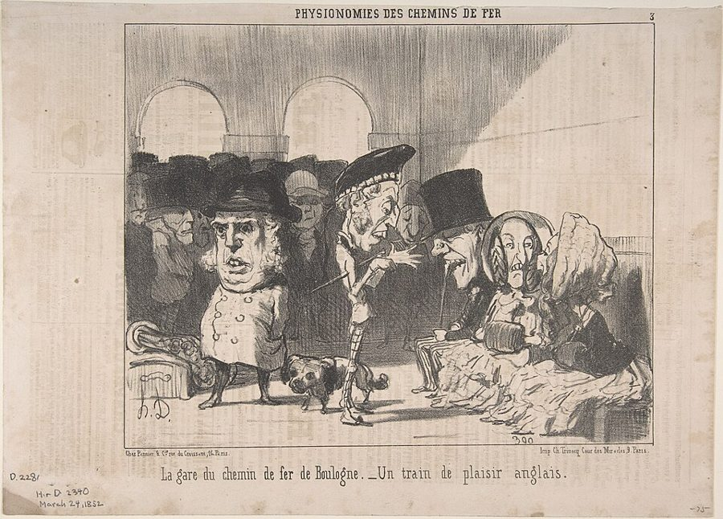
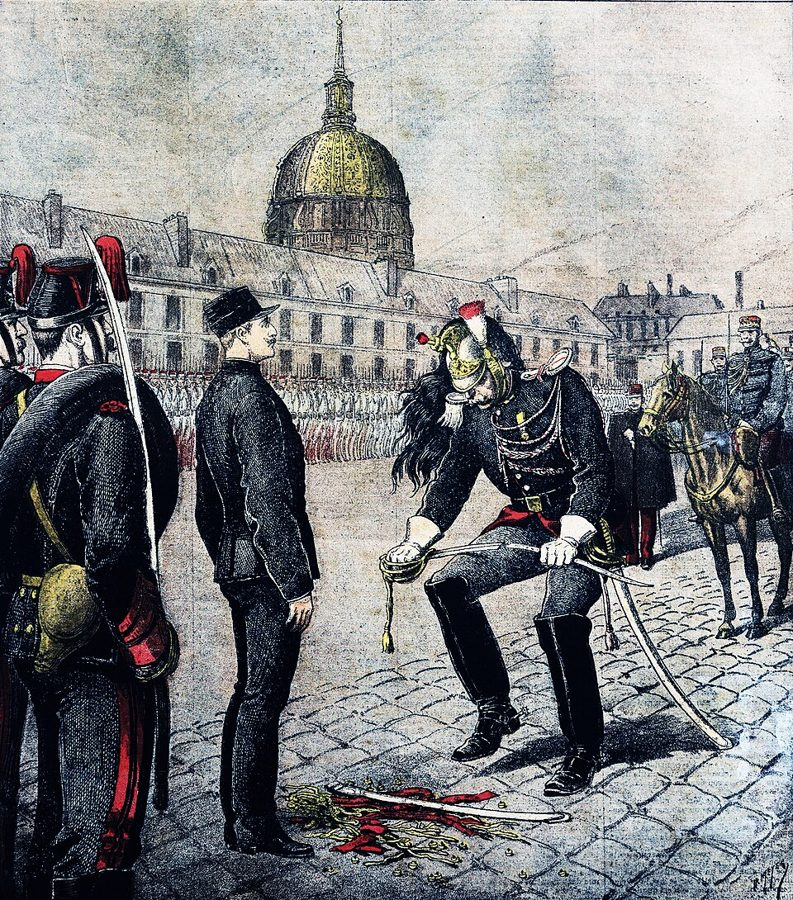
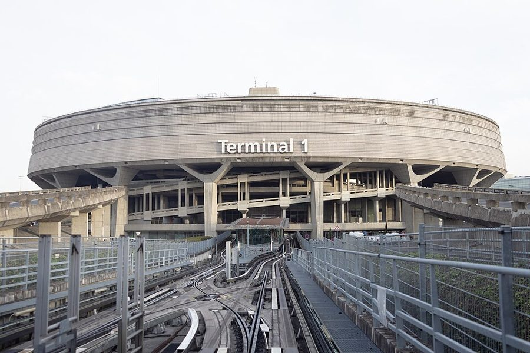
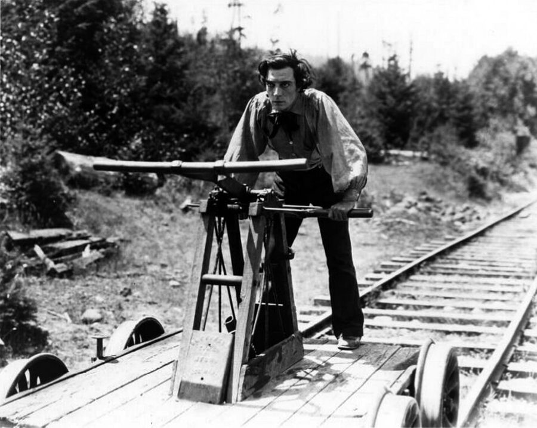

这一篇在做什么
这是全书的导言，为这本书写的，不是《纽约客》的专栏。作者从一张十九世纪的版画讲起：一列火车从巴黎开往月亮。接着讲他心里的巴黎是怎么来的：小时候卧室里的纸板警察，十几岁第一次到巴黎，后来带 Martha 私奔，再到 1995 年带着一岁的儿子搬过去。后半篇交代这本书写什么、不写什么、怎么写。读的时候抓两条线：作者的私人往事，和他对世纪末巴黎的看法；再看他怎样把两条线接回开头那张画。

杜米埃（Honoré Daumier）1852 年的石版画，画布洛涅火车站里一群英国游客（原题「英国游览列车」）。§1 说那张「巴黎开往月球」的版画是仿杜米埃的画风，这张是杜米埃本人画的火车站，可以看看那种画风。书里那张画本站没有找到。Honoré Daumier / Charles Trinocq，CC0，维基共享资源 读之前：这篇的来历
这一篇是全书的导言，写在巴黎五年快结束或刚结束的时候：文中说和 Martha 私奔已是二十五年前，提到斯塔尔报告和法国队拿世界冠军，口气是回头看整整五年。它不是专栏，而是给后面二十二篇搭架子：交代作者为什么去巴黎，这本书收了什么、删了什么（多数谈政治的文章没有收），为什么夹进每年圣诞写的私人日记（第 4、8、14、19 篇），为什么收了一篇 Papon 审判的长篇报道（第 9 篇）。下一篇《私人领地》回到 1995 年秋天，从他家楼下地铁里的一颗炸弹和找房子讲起。
一个美国人带着满脑子旧画片搬到巴黎，偏偏赶上人人都说法国「病了」的五年。他想在巴黎找什么，又打算怎样把找到的东西写下来？
读的时候带着这几个问题。不用先找答案，读完回来对照「检查一下理解」。
开头那张火车开往月亮的画，作者说它代表两种想法。他自己更信哪一种？§1
法兰西学院的小门洞为什么夹在讲十几岁看电影的中间？它和全书有什么关系？§2
作者说记者、学者、随笔作者各有一种毛病。他给自己的辩解说服你了吗？§3
最后一句「从月亮看巴黎」和开头那张画是什么关系？§1 §3
这一篇的路线
导言分两半。前一半是自传，按年代走：从 1960 年代的卧室，到 1973 年第一次到巴黎，到 Luke 出生后决定搬家，每一段都落在一个画面上。后一半从 §3 中间开始换了口气：从「我们为什么去」跳到「那几年人人说法国不行了」，然后交代这本书写什么、怎么写，一连好几个比方。读译本时如果觉得这里像换了一篇文章，那是作者在把私人的巴黎和公共的巴黎并排摆开。§3 末尾他又走回开头的纸板警察和红气球，§4 只剩一家三口。下面这张图把这条路线摊开。
往事
打算
§1
§2
§3
§4
首尾是同一组画面
去月球的火车
纸板警察、红气球
1973 初到巴黎
学院门洞：大与小
1975 私奔
Luke 出生
两座机场
五年对五年
棱镜与镜子
又见警察、气球、月亮
一家三口
本站示意图。橙点是作者自己的往事，蓝点是他对巴黎和这本书的说法，折线是阅读顺序，竖虚线是原书的分隔。上方的括线标出 §3 末尾回到了 §1 开头那组画面。 作者落在哪： 他承认自己的巴黎在很多方面仍是想象出来的，像那个纸板警察；但他认为心里带着画去的旅人看得更多。在人人说法国落伍的年代，他要写的是巴黎那种日常、实在的文明还活着，而且要从一家人的小事里去找。
分节地图
原书这一篇有三处分隔，分成四节。每一节的粗体是读译本时认得出的场面；下面的斜体是英文这一节开头的几个词，打开电子书搜它就能跳到那里。读完一节打个勾。
去月球的火车版画，纸板警察 Pierre约 1200 词 Not long after we moved to … 两种关于巴黎的浪漫从这里来。纸板警察和红气球要记住，全篇最后会回来。 十几岁初到巴黎，看电影，带 Martha 私奔约 1000 词 I saw the real—or anyway the … 表面是成长史。留意夹在中间的学院门洞，那是作者对巴黎美在哪里的说法。 Luke 出生决定搬家，两座机场，法国「病了」约 3000 词 For a long time New York … 最长、最抽象的一节：从私事转到这本书的打算，比方一个接一个。 一家三口，Le Soufflé 的后厅约 300 词 My real life in Paris, as … 导言收在献词上。看作者自己怎么说「感伤」这个词。
背景：作者默认你知道的事
按在书里出现的顺序排，标题前是节号。
§1 杜米埃和铁路热杜米埃（Honoré Daumier，1808–1879）是十九世纪法国最有名的讽刺画家，在报刊上画了几千幅石版漫画，挖苦政客、律师和巴黎的中产阶级，火车和车站是他常画的题材。十九世纪中叶法国大修铁路，铁路股票的炒作是当时漫画的常见靶子。书里那张画的图说「工业不再有障碍」，就是在讽刺这种牛皮。作者先说是仿杜米埃，又补一句他现在觉得不是杜米埃亲笔。
§1 「好美国人死后去巴黎」这句俏皮话最有名的版本出自王尔德：《道林·格雷的画像》（1891 年单行本）和剧本《无足轻重的女人》（1893 年首演）里都有人说「好美国人死了，就去巴黎」。它其实更早，美国作家霍姆斯 1858 年就在书里记下过，一般认为最早是波士顿人 Thomas Gold Appleton 的话。作者接一句：有些美国人总想趁早去，好避开人潮。§1 一口气点了一串去过巴黎的美国人：
亨利·詹姆斯 Henry James 美国出生的小说家（1843–1916），1875 年在巴黎住过一年，后来定居英国。小说里常写美国人在欧洲。作者引他的话说美国人太容易把巴黎当成天国之城。
王尔德 Oscar Wilde 爱尔兰作家（1854–1900），以妙语出名。上面那句玩笑因他而流行。
富兰克林 Benjamin Franklin 美国开国元勋，1776 到 1785 年出使法国，在巴黎极受欢迎。
格特鲁德·斯泰因 Gertrude Stein 美国作家（1874–1946），1903 年起住在巴黎，家里的沙龙是毕加索、海明威这些人常去的地方。
亨利·米勒 Henry Miller 美国作家（1891–1980），1930 年代住在巴黎，《北回归线》1934 年在巴黎出版，写的就是那几年穷困放荡的日子。
§1 《红气球》《玛德琳》和卡蒂埃-布列松《红气球》（Le Ballon rouge）是拉莫里斯（Albert Lamorisse）1956 年的短片，三十多分钟，几乎没有对白，在巴黎东北的梅尼蒙当（Ménilmontant）拍摄，主角是导演的儿子 Pascal。它拿了 1956 年戛纳电影节的短片金棕榈，又拿了奥斯卡最佳原创剧本。《玛德琳》（Madeline）是贝梅尔曼斯（Ludwig Bemelmans）1939 年起出的图画书，画巴黎一家寄宿学校里排成两列的十二个小女孩。卡蒂埃-布列松（Henri Cartier-Bresson，1908–2004）是法国摄影家，以黑白街头抓拍出名。王宫（Palais-Royal）在卢浮宫北边，有花园和拱廊；§1 拼成 Palais Royale，§4 拼作 Palais Royal，后者对。
§1 德雷福斯的「褫夺军衔」德雷福斯（Alfred Dreyfus）是法国陆军里的犹太裔上尉，1894 年被军事法庭以叛国罪判刑，主要证据是一张笔迹鉴定站不住脚的便条，后来证明是冤案。1895 年 1 月 5 日，他在巴黎军事学院的院子里当众被撕掉肩章、折断佩剑，然后流放魔鬼岛。这场案子把法国撕成两半，1906 年他才被平反。作者说小时候把纸板警察和德雷福斯混在一起：两个都是穿制服、留胡子的法国人，一个被扔掉，一个被剥夺军衔。

《小日报》（Le Petit Journal）1895 年 1 月的插图，画德雷福斯在军事学院的院子里被当众褫夺军衔，背景远处有一座金色穹顶。Henri Meyer，公有领域，维基共享资源 §2 法兰西学院、艺术桥和塞纳街法兰西学院（Institut de France）在塞纳河左岸，是一座带穹顶的十七世纪建筑，里面是法兰西学术院（Académie française，1635 年成立）等五个学院，院士俗称「不朽者」。正对它的艺术桥（pont des Arts）是一座步行桥，过河就是卢浮宫。塞纳街（rue de Seine）从学院旁边往南走。作者说的那个小门洞，就是从塞纳街一侧推着婴儿车能直接穿进学院院子的入口。他拿这一下「从大到小」说巴黎的美。
从卢浮宫一侧望艺术桥和对岸的法兰西学院。作者说从学院旁的小门洞再走十步，就上了这座桥。Wilfredor，CC0，维基共享资源 §2 1973 年、表哥的电影院和巴特的研讨班作者说一家人到巴黎是在「石油危机前几周」：1973 年 10 月中东战争爆发，阿拉伯产油国减产禁运，油价几个月里涨了几倍，西方战后的长期繁荣就此告一段落。他的父母是大学教授，当时一家住在蒙特利尔，那里说法语。§2 里出现的几个人：
杰奎琳·比塞 Jacqueline Bisset 英国女演员。作者说为了看她在《法官罗伊·比恩》（1972，保罗·纽曼主演的西部片）里一个很短的角色，专门跑到十九区一家放老片的影院。
多米尼克·桑达 Dominique Sanda 法国女演员，1970 年代初演过贝托鲁奇的《同流者》。表哥 Philippe 迷她。第 23 篇 Philippe 又出现，那时他已搬去伦敦。
罗兰·巴特 Roland Barthes 法国批评家、符号学家（1915–1980），当时在巴黎开研讨班，1977 年进法兰西公学院。作者说一个字也没听懂，后来遇到班上的法国学生，她也没听懂。
多纳托 Eugenio Donato 文学批评家（1937–1983），作者父亲的朋友，1966 年约翰·霍普金斯大学那场把德里达介绍给美国学界的会议，论文集就是他和 Richard Macksey 合编的。作者说他「萦绕在这本书里」。
§3 《纽约客》和瑟伯作者当时为《纽约客》写稿。这份周刊给了他两样东西：愿意听他写巴黎，也继续派给他巴黎以外的题目（书里举了格劳乔·马克斯和 1998 年的斯塔尔报告，后者是调查克林顿丑闻的独立检察官报告），这样他才付得起巴黎的开销。书桌上那张照片里的瑟伯（James Thurber，1894–1961）是《纽约客》的老作者和漫画家，一战刚结束时在美国驻巴黎使馆当过译电员。他小时候一只眼睛受伤，后来另一只也渐渐坏了，晚年几乎全盲，所以作者说照片里那双眼睛是「失明的」。
§3 两座机场纽约的肯尼迪机场原名 Idlewild，1963 年底肯尼迪遇刺后改名。巴黎的戴高乐机场 1974 年 3 月启用，一号航站楼是一座圆形的混凝土建筑，旅客乘坐透明管道里的自动扶梯上下，当时极新潮。作者说一个以年轻的国际主义者命名，一个以「老反动派」命名，现实却正好反过来，这是他的挖苦。利普啤酒馆（Brasserie Lipp）在圣日耳曼大道上，1880 年开张，政客和文人常去。

戴高乐机场一号航站楼，2022 年。§3 说 1989 年前后从纽约飞到这里，像从破败走进未来。Arne Müseler，CC BY-SA 3.0 de，维基共享资源 §3 「法国病了」和书里略去的大事1990 年代中期法国失业率长期在一成上下，英美报刊流行给法国「看病」，同时伦敦的新艺术、新餐馆正走红。作者说他写过的「公主之死、总理下台」：1997 年 8 月戴安娜在巴黎阿尔玛桥隧道车祸身亡；同年朱佩（Alain Juppé）政府在提前选举后下台，若斯潘（Lionel Jospin）接任总理。这些文章他多半没收进书里。斯特恩（Laurence Sterne）1768 年的《感伤旅行》开头一句是「他们在法国把这类事办得更好」，书里引的字句和原文略有出入。
齐达内 Zinedine Zidane 法国足球运动员，1998 年世界杯决赛头球破门两次，法国 3 比 0 胜巴西夺冠。作者说他欣赏齐达内谈任意球时那句「我处在我这门艺术的顶峰」。世界杯见第 16 篇。
索萨 Sammy Sosa 多米尼加出生的美国职棒球员，1998 年一季打出 66 支本垒打。作者说法国队员进球后模仿他亲手指的庆祝动作。
§4 Le Soufflé 和「情感教育」§4 念了一串饭馆的名字。Le Soufflé 以舒芙蕾出名；Ladurée 是以马卡龙出名的老茶点店，书里把它和前一家的名字连在一起，中间少了个逗号。最后那句「感伤的再教育」借的是福楼拜（Flaubert）1869 年的小说《情感教育》（L’Éducation sentimentale）：一个外省青年到巴黎，经历爱情和 1848 年革命，最后什么也没得到。
康诺利 Cyril Connolly 英国评论家（1903–1974），战时主编文学杂志《地平线》。作者说他念左岸旅馆的名字就有诗意，而且「不劳而获」。
词与短语
只收中文译文多半传不出原味的地方：熟词生义、反话和挖苦、典故、夹在英文里的法文。读译本读到觉得别扭、不知道作者在说什么时，来这里找那一节的；斜体小字是原句里的几个英文词，在电子书里搜它就能找到原文。
§1 去月球的火车版画，纸板警察 Pierre
not from the hand of
… not from the hand, of Daumier.
不是某人亲笔
the hand of 指画家本人的手笔，鉴定画作时的说法。前面 in the manner of 是「仿某人的风格」，中间插了一句保留意见，of Daumier 被挤到句末。作者第一句话就在纠正自己。
much less
… with any interest, much less wonder.
更别说
接在否定意思后面，往更强的一层推：只有两三个人看了一眼，更没有谁惊叹。火车开往月亮，站台上的人照样买票、哄孩子。
romances
… two notions, or romances, that had …
浪漫的憧憬
不是恋爱。romance 指带着理想色彩的想象。全书反复用这个词，§3 还说巴黎的 romance 是他的题目。
naturally modern
… as the naturally modern place, the …
天生就是现代的
原文斜体强调 naturally：十九世纪人眼里，巴黎不是在追赶现代，它本来就是现代发生的地方。后面说法国这时被认为落伍，正好对着这句读。
sublunary
… between the sublunary city and a celestial …
月亮底下的，尘世的
古老宇宙观里，月亮以下是会朽坏的人间，月亮以上是天界。用在这篇里正合适：这列火车正是从月下之城开往月亮。
the celestial city
… Paris is the celestial city,”
天国之城
英美读者会想到班扬《天路历程》（1678）里朝圣者最后要到的 Celestial City。作者引詹姆斯这句，说美国人太容易把巴黎当成天堂。
a roomy idea
It’s a roomy idea.
能装下很多人的想法
roomy 本是房间宽敞。前面列了富兰克林、斯泰因、米勒三个人，这个想法宽敞得谁都能挤进来。轻轻一句，挖苦里带着自嘲。
beat the crowds
… get there early and beat the crowds.
赶在人潮之前
旅游时的口头禅：早点出门，避开人多。接在王尔德「好美国人死后去巴黎」后面：有些美国人等不及死，活着就先去了。
improves on
… Air France, improves on Life, or …
比……更好
improve on sth 是「胜过、美化」。大写的 Art 和 Life 模仿「艺术与人生」的大题目，两个 or at any rate 又把它降到航空公司和巴黎警察：纸板警察在笑，真警察不笑。
like Danzig
… divided between us, like Danzig.
像但泽一样
但泽（今波兰格但斯克）在两次大战之间是国际联盟保护下的自由市，德国和波兰都想要，1939 年二战就从这里打响。小孩分城市，作者用列强瓜分领土的口吻，下一句还有「小公国」。
Haussmannian
… right out of the Haussmannian apartment;
奥斯曼式的
十九世纪中叶奥斯曼（Haussmann）主持改造巴黎，大道两旁盖起立面统一的石头公寓楼，今天巴黎的街景多半是那时定下的。
insouciance
The insouciance with which he does …
满不在乎
法文借词，比 carelessness 多一层潇洒。后面破折号补一句：蛋糕对这孩子是理所当然，不是奖赏。这一点让小时候的作者印象很深。
relieved by
A scowling gray universe relieved by pastry:
被……点缀、调剂
relieve 不是「让人放心」，是打破单调，像画面上一点亮色。灰扑扑、板着脸的世界，靠糕点透一口气。作者说这是他对巴黎最早的印象，而且在后来的种种印象里，它还不是离真相最远的：拐着弯的肯定。
hygienic decisiveness
… display of hygienic decisiveness, decided that …
讲卫生的果断
大词小用：扔掉一个旧纸板人，说成一次讲卫生、有魄力的决策，前面还加了 completely atypical（完全不像他们平时）。孩子的伤心用大人的公文腔说，更显得委屈。
pass away
… time for him to pass away,
离世
「去世」的委婉说法，用在一个纸板人身上。下一段作者哭了一整夜：大人的委婉语，孩子的真伤心。
degradation
… Captain Dreyfus and his degradation, …
褫夺军衔
不是「堕落」，是军队里当众撕肩章、折佩剑的仪式（见「背景」）。原文斜体强调 his：Pierre 被扔出门，德雷福斯被逐出军队，孩子把两件事混在一起。
intimations
… to supply intimations of the other, …
隐约的预示
紧接着一句 They were certainly there to be intimated：法国生活阴暗的一面确实存在，有的是东西可以预示。作者在括号里冷冷带过。第 9 篇的 Papon 审判碰的也是法国的阴暗面。
§2 十几岁初到巴黎，看电影，带 Martha 私奔
portes
… one of the portes of Paris,
（法文）城门
巴黎环城快速路的出入口至今叫 porte d’Orléans、porte de Clignancourt 之类，名字来自旧城墙的城门。作者顺手解释了：城门早没了，名字还在。
wore its heart on its sleeve
It wore its heart on its sleeve,
心事全写在脸上
成语，感情外露、不加掩饰。作者接着翻一层：巴黎把心亮在外面，那颗心却是关着的，神秘、不招呼人。
turned up at the edges
… sandwiches that turned up at the edges.
边上翘起来
turn up 不是「出现」，是边缘卷翘：放久了干掉的三明治。英国食物难吃，是美国人的老笑话。
fifth-run
… finding a fifth-run movie theater someplace …
五轮影院
电影先在首轮影院上映，越往后越便宜、越破旧。五轮是排到很后面的老片小影院。为了看比塞几分钟的戏，跑到这种地方。
footsore particular
… the abstract and the footsore particular,
走得脚疼的具体
「抽象与具体」是哲学课的说法，作者给「具体」加了个形容词 footsore（走路走到脚疼），一下子把哲学拉到街上。这一段讲的「从大到小」，就藏在这种搭配里。
set piece
… vast and impersonal set piece architecture,
精心布置的大场面
set piece 是戏剧、绘画、电影里事先排好的华丽场面。说巴黎的建筑像舞台布景一样宏大、冷淡，和下半句「小而曲折、临时凑出来的经验」相对。
poussette
… you can push a poussette right through …
（法文）婴儿推车
作者写这句时已是推车的父亲，所以说 as I have since found out（后来才发现）。这个法文词第 4、14、23 篇还会出现。
advertised attractions
… many of the advertised attractions—the seminar …
广告上许诺的看点
旅游手册的腔调。年轻的作者拿「我的朋友罗兰·巴特的研讨班」当招牌把女孩哄到巴黎，结果没兑现。前面那句 I still won’t say deceive 也是同一个玩笑。
§3 Luke 出生决定搬家，两座机场，法国「病了」
portable
… no longer be “portable.” When …
还能随身带走
本是说电器、行李便于携带。用在孩子身上加了引号：五岁以后要上学、有朋友，就不能说走就走了。
compositely
… our friends all said, compositely.
合起来说
朋友们的劝告各不相同，作者把它们合成一句，还排成 (a)(b)(c) 选择题。下一句他们小声回嘴：「可是能跑啊」。
say grandly, and mean it cautiously
… could say grandly, and mean it cautiously.
嘴上豪迈，心里谨慎
「待到千禧年」听着豪迈，心里的意思却很保守：先待五年。全书写的正是这五年。
in place
… lots of good writers in place …
派驻在当地
in place 在这里是「在当地、驻在那里」，不是「到位」。
moony
… a moony or even a loony …
痴迷恍惚的
moony 是神魂颠倒、心不在焉，字面里又有 moon，扣着书名。和 loony（疯癫）押韵，作者自嘲这个题目有点傻。
livery drivers
… of illegal livery drivers (whose …
包车行的司机
livery 本义是仆役的制服，在美国指出租马车、包车行业。illegal 是标牌上的限定：警告的是无照拉客的黑车。
delicately
… complexions, delicately, had been made neither …
小心翼翼地
反话。标牌上画的黑车司机肤色既不黑也不白，画成「黝黑」像海盗。作者挖苦这种怕得罪人的含糊，delicately 要反着读。
the amnesia of experts
… compared with the amnesia of experts.
专家的健忘
接着「大众的记性短」往上翻一层：专家忘得更快。1989 年前后很多人说欧洲拥有未来，几年后又都说法国完了。
dispensation
… the new all-American dispensation.
新天命、新秩序
dispensation 原是神学词，指上帝在某个时代安排的秩序。说 1990 年代美国式的天下是一套「新天命」，带着讽刺。
tours d’horizon
Many journalistic tours d’ horizons have been
（法文）全面综述
tour d’horizon 字面是「环视地平线」，外交和新闻里指把局势通盘扫一遍。作者自己的书反过来，§3 说它不是什么 tour of any horizon，只是绕公园走一圈。原书在这里多打了一个空格和一个 s。
Whither France?
years—“Whither France?” and “Whether France
法国向何处去？
whither 是古雅的「往哪里去」，社论标题的套话。后面一串 Whether、Weathering、Withers、Withering 都是它的谐音变形，作者在笑这类文章千篇一律。
autrement
… French like to say, autrement, otherly.
（法文）以别的方式
作者故意用一个生僻、别扭的英文词 otherly 去对译，好让你感到这个法文词的味道：大意是不照美国那一套来，不一定更好，只是不一样。
the studs on the broad belt
… the studs on the broad belt …
宽皮带上的铆钉
把英语世界比作一条绕地球的宽皮带，阿德莱德、多伦多、洛杉矶是上面的铆钉，纽约是皮带扣。巴黎不在这条皮带上。
moral moonlight
… a kind of moral moonlight, a little …
道德的月光
接着上一句「巴黎的光」往下说：如今这光更神秘、更特别，像月光，借着它看东西没那么清楚。又一次扣到月亮。
significant absences
… would call the significant absences, between …
意味深长的缺席
文学理论课的行话：没写出来的东西也有意义。作者半开玩笑地借来，说他关心的是两地生活之间细小的差别。
a walk around the park
… than just a walk around the park.
绕公园走一圈
字面意思，和成语 a walk in the park（小菜一碟）不是一回事。对着前面 tour of any horizon（全景式考察）说：这本书只是一家人推着车逛公园。
notes sent inward
… notes sent inward rather than letters …
写给自己的便条
对比专栏文章是「寄出去的信」，圣诞日记是「往里寄的便条」，作者猜这就是日记更沉思、更悲观的原因。读第 4、8、14、19 篇时可以想起这句。
just the three of us
… loneliness, just the three of us.
只有我们三个
同一句话用了两次：第一次后面是感叹号，是喜悦；第二次是斜体，是孤单。中文很难只靠字面传出这种翻转，读的时候注意标点。
foreign parts
… raising a kid in foreign parts.
异国他乡
有点老派、半开玩笑的说法，像十九世纪游记的口吻。作者一连用了好几次。
a funny time
… parts in a funny time.
古怪的年头
funny 是「怪」，不是「好笑」。下一句解释：天下太平富足，却有很多怨气冲着美国。
contrast and compare
… in exam papers, contrast and compare.
比较异同
英美学校考卷上的题型。作者把全书的写法说成一道考题：儿子的头五年，对照世纪的最后五年。
trinity
… about the trinity of late-century bourgeois …
三位一体
神学词，用在孩子、做饭、看比赛（加上「看人购物」）这三样中产阶级的心头好上，大词小用。
liberal
… how a North American liberal, with …
（北美的）自由派
美国说的 liberal 偏左，信普世价值、不喜欢民族主义；和欧洲说的经济自由主义几乎相反。作者在问：这样一个人，住了五年，会怎样看待「差异」本身。
distinctive rather than different
… was distinctive rather than different from its …
有特色，但不算不同
两个词作者分得很细：distinctive 是在同一个路子上有自己的味道，different 是根本另一回事。他说法国说唱之于美国源头，就像十九世纪美国印象派之于它学的样板：有自家味道，路子还是人家的。
the figure in the carpet
… the figure in the carpet, and if …
地毯上的图案
典出亨利·詹姆斯 1896 年的短篇《地毯上的图案》：一位小说家说他所有作品里藏着一个贯穿的图案，评论家怎么也找不到。和前面「小中见大」并列，说他要找藏在小事里的大东西。
not ephemeral enough
… that it is not ephemeral enough,
还不够转瞬即逝
人们常批评新闻「太短命」，作者反过来说：毛病是不够短命，总盯着当时看似重大的事，漏掉小而长久的东西。要反着读。
chômeurs
… typical of the new class of chômeurs
（法文）失业者
1990 年代法国报道的高频词。作者编了两句腔调：记者从一个人推到一个阶级，学者从一个阶级落到一个人，用的是同一个水管工 Pierre，也是纸板警察的名字。
a prism
The essayist dreams of being a prism,
棱镜
棱镜让别的光穿过、分出颜色；镜子只照出自己那张老脸。随笔作者希望自己是前者，怕成了后者。
handcar
… pumping furiously on a handcar on …
（铁路上的）手摇车
靠人上下压杠杆前进的轨道小车。作者把经历比作手摇车，历史比作大火车：看上去并驾齐驱，其实只有拼命摇才能跟上一会儿。

基顿（Buster Keaton）在默片《将军号》（The General，1926）里摇手摇车。书里没说是哪一部基顿电影，这张只是让你看看手摇车的样子。Buster Keaton Productions，公有领域，维基共享资源 peripheral vision
If his peripheral vision gets diminished—so
眼角的余光
字面是视野边缘，作者紧接着说 quite literally：看不见从这个地方的郊区冲过来的东西。巴黎的郊区在 1990 年代常因移民、失业的问题上新闻，满脑子老画片的旅人容易看漏。这是作者对自己的一句提防。
Bizzaro New York
… an invention, a Bizzaro New York,
颠倒版的纽约
典出美国《超人》漫画里的 Bizarro（原书拼成 Bizzaro）：一个什么都和地球反着来的世界。作者说他的巴黎是纽约的反面：纽约具体，巴黎抽象；纽约简短，巴黎繁复。
a lunchtime’s work
… would have been a lunchtime’s work for …
一顿午饭就能搞定的事
说 Donato 这样的解构批评家，一顿午饭工夫就能论证「这本写巴黎的书其实写的是纽约」。下一句接 not a dinner’s worth of truth：午饭够论证，晚饭不够真理。用两顿饭比轻重。
sideshow
… in the sideshow of postmodern culture …
（马戏团的）杂耍小棚
sideshow 是主帐篷外的余兴节目，引申为次要的事。巴黎在后现代文化里只是边上的小摊子，这个文明却在那里撑着。这一部分的总题正是「冬季马戏团」。
§4 一家三口，Le Soufflé 的后厅
unearned
… achieved an unearned poetic effect by …
不劳而获的
念一串地名就有诗意，不用费力写，所以是「不劳而获」。作者说自己念饭馆名字的效果更不劳而获，可感受一点不少。
sentimental reeducation
… Paris for a sentimental reeducation—I did …
情感的再教育
借福楼拜《情感教育》的书名（见「背景」），多了一个 re-：重新受一次教育。结尾自嘲：学到的不是想学的，所以才叫教育。sentimental 前面刚说过，是「感伤、多情」，作者承认自己就是这样。
the dedication table
… a place at the dedication table …
献词的餐桌
把献词写成一张饭桌，请妻儿和第一位读者 Henry Finder 同坐。后半句接着吃的比方：Finder 没尝到饭，只能凭信任相信味道，说的是 Finder 只读到了文字。
后来
这一篇写在 2000 年前后。下面接着讲书里提到的两件事后来怎样。每条都写了核对日期，这类内容过一两年就会变。
德雷福斯：追晋准将，雕像搬到最高法院门前
作者小时候把纸板警察和德雷福斯混在一起。2025 年 6 月和 11 月，法国国民议会和参议院先后一致通过法律，追晋德雷福斯为准将（général de brigade），11 月 17 日颁布，作为平反的最后一步。他的雕像（雕塑家 Tim 1980 年代所作，手里握着折断的佩剑）原本想立在当年褫夺军衔的军事学院，军方不同意，先在杜伊勒里花园放了几年，1994 年起立在拉斯帕伊大道附近的一个小广场上，正是作者一家住在巴黎的那几年。2026 年 7 月 12 日，平反 120 周年那天，雕像在最高法院门前的阿尔莱街揭幕。核对于 2026-10。依据：第 2025-1079 号法律（Légifrance），法国参议院，巴黎市政府网站，《世界报》。
Le Soufflé 和 Le Petit Saint-Benoît
§4 那串饭馆名字里，至少两家还开着。巴黎以舒芙蕾出名的 Le Soufflé 在一区的蒙塔博街（rue du Mont-Thabor），店家和多数介绍都说它 1961 年开张，招牌是咸甜各式舒芙蕾；书里没写地址，多半就是这家。Le Petit Saint-Benoît 在六区圣伯努瓦街，是一家老派小馆，2023 年底换了新店主，老装潢保留，仍在营业。核对于 2026-10。依据：Le Soufflé 官网，Time Out Paris，Le Petit Saint-Benoît 官网，Au cœur du CHR。
值得停下来的句子
The passage from the big to the little is what makes Paris beautiful— §2，法兰西学院小门洞那一段。本站译：让巴黎美的，是从大到小的那一下过渡。
passage 一词两用：既是「过渡」，也是「通道」，而作者说的正是一条真的通道，推着婴儿车从塞纳街钻进学院的院子。中文只能取一个意思。这句话也是全书的写法：从罢工走到一只火鸡，从世纪末走到一个孩子。
I see the moon these days from Paris because I once saw Paris from the moon.— §3 最后一句。本站译：如今我在巴黎看得见月亮，因为我曾经在月亮上看过巴黎。
前后两半是镜像：see the moon from Paris 对 saw Paris from the moon，时态从现在换到过去，these days 对 once。月亮接回开头那列火车，也就是孩子心里那个遥远的、画出来的巴黎。中文把对称译出来不难，难的是 see 和 saw 这一换，把五年和一辈子连在了一起。
检查一下理解
先在心里答，再点开。答错的那题，回书里把对应那一节再读一遍。
1.（§1）那张火车开往月亮的画，作者说代表哪两种想法？ 一是十九世纪那种「巴黎天生就是现代之地」的想象：真有火车去月亮，也会从巴黎北站开。二是一些美国人心里「巴黎是通往天国的车站」。作者承认第二种不切实际，但说它至少不是他首创，詹姆斯和王尔德早就笑过。
2.（§1）纸板警察被扔掉，孩子学到了什么？作者为什么说这「也是一种巴黎的情绪」？ 东西会变，人对此无能为力。作者把这种无可奈何的伤感算作巴黎式的情绪。他还说，稍后读到德雷福斯，把两个人混在了一起，也许 Pierre 是来预示法国阴暗的一面的。
3.（§2）作者说巴黎美在哪里？ 美在宏大的、公共的东西和细小的、个人的经验混在一起，在从大到小的那一下过渡。例子是从塞纳街的小门洞推着婴儿车钻进法兰西学院。要领会它，得甘愿做个小人物，低头走路，偶尔抬头侧看。
4.（§3）作者说，1990 年代美国人在巴黎学到的东西和以前有什么不同？ 过去两百年美国人去巴黎，学的是世界中心的东西：外交语言、艺术、烹饪。这几年世界越来越「全球化」，法国反倒更不一样了，巴黎成了学「怎样不照美国那一套做」的地方。美国人在这里学到差异，是因为离中心远了。
5.（§3）记者、学者、随笔作者各有什么毛病？作者怎样为自己辩解？ 记者以为一切历史都能化成个人经历，学者以为一切经历都能化成历史，随笔作者以为一切都能化成他自己和家人。作者说，在他这里经历和历史没有被化简，而是搅在一起，至少成了一个题目。他想做棱镜，怕成了镜子。
6.（§3）「两种旅人」是哪两种？作者是哪一种？ 一种去看那里有什么，一种带着心里的画去，想把它实现。作者认为第二种看得更多，因为总在拿眼前的和心里的比，代价可能是眼角的余光变差。他自己是第二种，脑子里装满黑白的巴黎照片。
7.（§3）为什么说这篇的结尾回到了开头？ §3 最后又出现了公车上不让带的气球、披斗篷的纸板警察，最后一句落在月亮上，正是 §1 的那三样东西。作者承认自己的巴黎多少是纸板做的，但他说这些画面也有它们的一点真实。
用一句话说这一篇，写给一个没读过的人。
精彩回顾
读过又忘了，从这里想起来。挑的是这一篇最值得记住的场面和说法，不按原书顺序；每条后面是节号，想细看就回书里那一节。全书各篇的这一节都收在全书回顾 。
一句话： 作者承认他的巴黎是从一个纸板警察开始的梦，却打算用一家人五年的小日子，写出巴黎那种日常的文明还活着。
纸板警察 Pierre 母亲从航空公司拿回一个真人大小的纸板巴黎警察，守着兄弟俩的卧室，破了被扔到街上。作者哭了一夜，第一次知道东西会变。导言末尾他还说，巴黎在他眼里多少仍是这个纸板人。
§1 推着婴儿车进学院 从塞纳街的小门洞推车一穿，就进了法兰西学院的院子，再走十步上了艺术桥。作者说巴黎的美就在这种从大到小的过渡里。
§2 两座机场 1989 年前后，纽约的肯尼迪机场破旧、坑洼，巴黎的戴高乐机场像未来。几年后舆论翻转，人人说法国落伍了。作者挖苦：专家比大众更健忘。
§3 只有我们三个 同一句话说两遍：先是喜悦，一家三口在巴黎；再是孤单，身边也只有这三个人。作者说这本书剥掉政治以后，剩下的多是在异乡养孩子的故事。
§3 棱镜，不是镜子 记者把历史化成个人，学者把个人化成历史，随笔作者把一切化成自己。作者想做让光穿过的棱镜，怕成了只照出自己那张老脸的镜子。
§3 Le Soufflé 的后厅 十二月的周六下午，Luke 在推车里睡着，对面一对老夫妇来了四十年，带着一条瞎眼小狗。作者承认这叫感伤，说他就是为了「感伤的再教育」去的巴黎。
§4